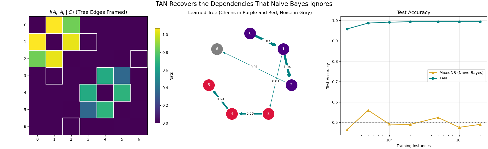

Note
Go to the end to download the full example code.
Learning the Tree: TAN vs Naive Bayes#
skbn.TAN (Tree Augmented Naive Bayes) lets every attribute depend
on the class and on at most one other attribute. The dependencies form a
tree, learned from the data with the Chow-Liu procedure: the conditional
mutual information $I(A_i; A_j mid C)$ is computed for every pair of
attributes, and the tree of maximum total weight is kept.
The Scenario: Seven categorical attributes. Attributes 0-1-2 and 3-4-5 form two chains: each attribute copies the previous one shifted by the class, with some noise. Attribute 6 is pure noise. Every attribute on its own is uniformly distributed in both classes, so it carries no information about the class; the information is only in the pairs of consecutive attributes.
What Happens: Naive Bayes looks at one attribute at a time and stays at chance level. TAN finds the two chains (the edges of largest conditional mutual information), joins them and the noise attribute with weak edges, and classifies almost perfectly with only a few dozen training instances.

Parent of each attribute: [-1 0 1 1 3 4 2]
MixedNB (Naive Bayes): [0.465 0.56 0.492 0.49 0.524 0.476 0.491]
TAN: [0.958 0.987 0.992 0.994 0.994 0.994 0.994]
# Author: The scikit-bayes Developers
# SPDX-License-Identifier: BSD-3-Clause
import matplotlib.pyplot as plt
import numpy as np
from sklearn.metrics import accuracy_score
from skbn import TAN, MixedNB
# --- 1. Generate Data: Two Chains and a Noise Attribute ---
N_VALUES = 4
def make_data(n_samples, rng):
y = rng.randint(0, 2, size=n_samples)
columns = []
for keep in (0.9, 0.75): # two chains with different noise levels
chain = [rng.randint(0, N_VALUES, size=n_samples)]
for _ in range(2):
copy = (chain[-1] + y) % N_VALUES
noise = rng.randint(0, N_VALUES, size=n_samples)
chain.append(np.where(rng.rand(n_samples) < keep, copy, noise))
columns.extend(chain)
columns.append(rng.randint(0, N_VALUES, size=n_samples)) # noise
return np.column_stack(columns), y
rng = np.random.RandomState(42)
X_train, y_train = make_data(2000, rng)
X_test, y_test = make_data(5000, rng)
# --- 2. Learn the Tree ---
tan = TAN().fit(X_train, y_train)
cmi = tan.conditional_mutual_info_
print("Parent of each attribute:", tan.parents_)
# --- 3. Accuracy as the Training Set Grows ---
sizes = [25, 50, 100, 200, 500, 1000, 2000]
models = {
"MixedNB (Naive Bayes)": (MixedNB, "goldenrod", "^"),
"TAN": (TAN, "teal", "o"),
}
accuracy = {name: [] for name in models}
for n in sizes:
for name, (Model, _, _) in models.items():
model = Model().fit(X_train[:n], y_train[:n])
accuracy[name].append(accuracy_score(y_test, model.predict(X_test)))
for name in models:
print(f"{name}: {np.round(accuracy[name], 3)}")
# --- 4. Plotting ---
fig, axes = plt.subplots(1, 3, figsize=(18, 5.5), layout="constrained")
n_features = X_train.shape[1]
# (a) Conditional mutual information, with the edges of the tree marked
im = axes[0].imshow(cmi, cmap="viridis")
for i, p in enumerate(tan.parents_):
if p >= 0:
for r, c in ((i, p), (p, i)):
axes[0].add_patch(
plt.Rectangle((c - 0.5, r - 0.5), 1, 1, fill=False, color="white", lw=2)
)
axes[0].set_xticks(range(n_features))
axes[0].set_yticks(range(n_features))
axes[0].set_title("$I(A_i; A_j \\mid C)$ (Tree Edges Framed)", fontsize=13)
fig.colorbar(im, ax=axes[0], shrink=0.8, label="Nats")
# (b) The learned tree, directed away from the root (attribute 0)
angles = np.pi / 2 - 2 * np.pi * np.arange(n_features) / n_features
pos = np.column_stack([np.cos(angles), np.sin(angles)])
max_cmi = max(cmi[i, p] for i, p in enumerate(tan.parents_) if p >= 0)
for i, p in enumerate(tan.parents_):
if p < 0:
continue
axes[1].annotate(
"",
xy=pos[i],
xytext=pos[p],
arrowprops=dict(
arrowstyle="-|>",
color="teal",
lw=1 + 5 * cmi[i, p] / max_cmi,
shrinkA=18,
shrinkB=18,
),
)
mid = (pos[i] + pos[p]) / 2
axes[1].text(
*mid,
f"{cmi[i, p]:.2f}",
fontsize=9,
ha="center",
va="center",
bbox=dict(facecolor="white", edgecolor="none", pad=1),
)
colors = ["indigo"] * 3 + ["crimson"] * 3 + ["gray"]
for i in range(n_features):
axes[1].scatter(*pos[i], s=900, color=colors[i], zorder=3)
axes[1].text(*pos[i], str(i), color="white", ha="center", va="center", zorder=4)
axes[1].set_xlim(-1.4, 1.4)
axes[1].set_ylim(-1.4, 1.4)
axes[1].set_aspect("equal")
axes[1].axis("off")
axes[1].set_title("Learned Tree (Chains in Purple and Red, Noise in Gray)")
# (c) Accuracy vs training size
for name, (_, color, marker) in models.items():
axes[2].plot(
sizes, accuracy[name], color=color, marker=marker, linewidth=2, label=name
)
axes[2].axhline(0.5, color="gray", linestyle=":", linewidth=1.5)
axes[2].set_xscale("log")
axes[2].set_xlabel("Training Instances")
axes[2].set_ylabel("Test Accuracy")
axes[2].set_title("Test Accuracy", fontsize=13)
axes[2].grid(alpha=0.3)
axes[2].legend()
fig.suptitle("TAN Recovers the Dependencies That Naive Bayes Ignores", fontsize=16)
plt.show()
Total running time of the script: (0 minutes 0.521 seconds)